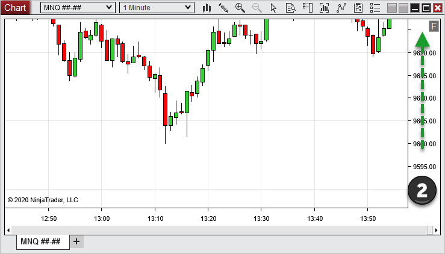

|
<< Click to Display Table of Contents >> Navigating a Chart |


|
Navigating a Chart
|
<< Click to Display Table of Contents >> Navigating a Chart |
|
The following section covers navigation and display of NinjaTrader charts.
 How to change the horizontal scale and time range of a chart
How to change the horizontal scale and time range of a chart
Horizontal ScalingTo compress or decompress the horizontal axis, left mouse click in the x-axis margin and move the mouse cursor to the left or right. Alternatively, use the Hot Keys CTRL + Up and CTRL + Down.
1. Click and drag to the right will compress the chart's time scale
2. Click and drag to the left will decompress the chart's time scale
|
 How to change the vertical scale and price range of a chart
How to change the vertical scale and price range of a chart
Vertical ScalingTo compress or decompress the chart's vertical axis, left mouse click in the y-axis margin and move the mouse cursor up or down as shown in the images below:
1. Click and drag down will shrink the chart's price scale
2. Click and drag up will stretch the chart's price scale
Fixed vs Automatic ScalingA box with an "F" (Fixed) will appear in the upper right corner of the chart margin any time the vertical chart axis is manually adjusted. This signifies the chart axis is set to a "fixed" scale. Left mouse click this button to return to automatic scale.
|
 How to scroll a chart (panning)
How to scroll a chart (panning)
Horizontal Scrolling (panning chart left or right)You can pan the chart left or right via the following controls:
Range IconIf the horizontal axis is scrolled to the left or right from its starting location, a "return" icon will appear in the top right hand corner of the chart. Left mouse click on the icon to return the horizontal axis to view the last "live" data on the chart.
Vertical Scrolling (panning chart up or down)To pan the chart up or down:
CTRL + Left mouse click and hold on chart margin and drag up or down as depicted in the images below.
1. CTRL + Click and drag down will shift the chart's price scale up 2. CTRL + Click and drag up will shift the chart's price scale down

Free Mode ScrollingYou can also navigate the chart by changing both the price axis and time axis at the same time by holding down the CTRL key + Left mouse clicking and dragging in the chart area. This will allow you to move both the price and time axis in whichever direction the mouse is dragged. |
 How to go to a specific time on the chart
How to go to a specific time on the chart
Go To...You can go to a specific date and time on a chart by right clicking on the scroll bar and selecting Go To...
A Go To... window will appear in which you can enter the desired date and time. Once complete, select OK to go to that time.
|
 How to zoom in and out in a chart
How to zoom in and out in a chart
Zoom InTo create a zoom frame around a chart area you want to focus in on:
1.Left mouse click on the Zoom In icon in the tool bar, select the Zoom In menu item within the right mouse button click context menu, or use the zoom in Hot Key CTRL+ ALT + Z 2.Left mouse click and while holding down the left mouse button, draw a zoom frame region and release the button.
The chart display area will zoom in to the selected frame area.
Zoom OutEach zoom in can be undone to the prior zoom level with a zoom out. To zoom out, left mouse click on the Zoom Out icon in the chart tool bar, select the Zoom Out menu item within the right mouse button click context menu, or use the zoom out Hot Key CTRL+ ALT + O. |
 How to change the bar spacing and width
How to change the bar spacing and width
Bar SpacingTo change the spacing between bars:
•CTRL + Up arrow key decreases bar spacing •CTRL + Down arrow key increases bar spacing
Bar WidthTo change the width of bars:
•ALT + Up arrow key decreases bar width •ALT + Down arrow key increases bar width
Alternatively, left mouse click on the "Chart style" chart toolbar icon to access bar spacing and width functions
|
Cursor TypeYou can have either the standard windows pointer, cross hair or global cross hair for chart navigation. You can toggle between cursor modes via the right mouse click context menu cursor sub menu, the "Cursor" chart toolbar icon or via the following shortcut keys:
|